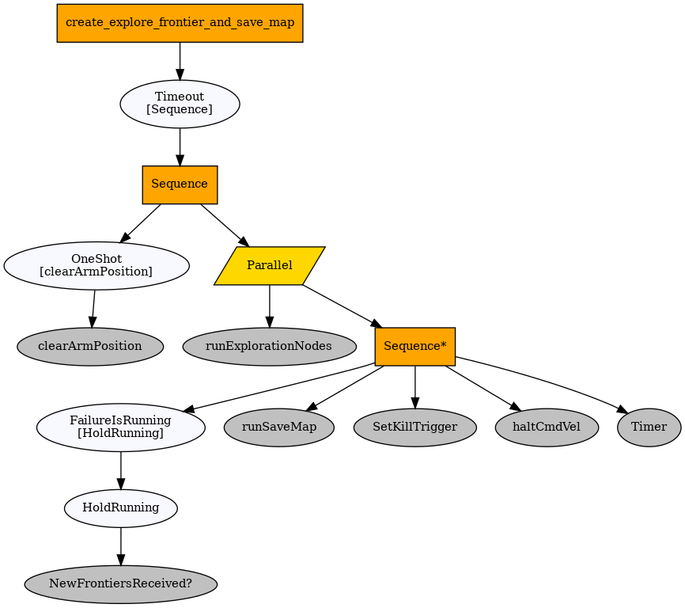
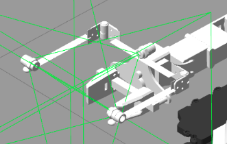

Dr. Phil is made up of 5 interconnected subsystems:
The whole system is built in ROS (Robot Operating System), where features are separated into different nodes which communicate with each other using messages. All nodes are run on the Raspberry Pi, which also handles communications between the various sensors, encoders etc. as well as the remote PC which itself communicates with the App via ssh tunnel. The execution flow is managed by a behaviour tree, which ties all of the available functionality together in a compact, modular and extensible framework.
To tie all the robot functionality together, behaviour trees were employed. This is due to the need for modular behaviour composition, and reactivity, modularity, as well as ease of maintenance and readability. Alternatives considered, were finite state machines and their variations - but those were dismissed on account of the vast number of transitions required and the difficulty in maintaining, testing and growing complex behaviours as we go.
Behaviour trees are a tree-based model of execution flow. Each leaf in the tree describes an action to be per-formed, which when "ticked" returns one state out of "FAILURE","RUNNING", "SUCCESS", and then execution flow is modified appropriately by parent nodes. Composite nodes can have multiple children and allow for the combination of multiple actions into a plan. An example of such node is the "Sequence" node which ticks all of its children in order. It does that until one returns with "FAILURE", at which point it prop-agates this state up the tree, or until all of its children return with "SUCCESS" at which point the Sequence propagates "SUCCESS" up the tree instead. Every time a child node is "RUNNING", so is the parent. For more information on behaviour trees visit Chris Simpson's guide
The general structure of the project was designed to promote re-use of sub-trees and test-ability of individual components.
Due to the pandemic most of the work was performed in simulation. In order to ensure everything worked both in simulation and hardware as expected, a ROS package was specifically developed to mimic the hardware interface of the robot, and enabled us to run the exact same code on the hardware as within the simulation.
The navigation system uses a SLAM algorithm (Simultaneous localization and mapping) for mapping the robot's environment and it's position in that environment. Specifically, we used the gmapping package since it had the best performance during testing and it is relatively lightweight and customisable. The explore_lite and frontier_exploration package allows the robot to roam a space and create an occupancy map without human input.
The door handle localisation algorithm uses geometry, the correspondence between lidar and camera rays to find out the 3D coordinates of the handle features within the image. We select the point of interest on our image, generate a 3D ray from the camera corresponding to all points mapping to that pixel, then perform intersection checks between this ray and the line segments formed by each consecutive lidar hit point. The algorithm assumes the door is a plane perpendicular to the floor, and that the handle feature is placed roughly 4cm away from the door. Once the algorithm computes the coordinates, the robot can then localise itself infront of the door so it is ready to disinfect the handle.
Robust linear regression is done utilising the neighbouring laser readings to produce smoother readings due to noise.
The local planner performs analysis on the lidar data and tries to identify basic shapes in their structure, such as lines points and polygons. These are then observed over time to identify dynamic obstacles and modify plans so as to anticipate the motion of those obstacles.
The disinfection stack is primarily hardware based. We have a pump which pumps water from the base of the turtlebot to the nozzle located at the top of the arm. As the tank is directly on top of the turtlebot, any spillage would be disastrous. Therefore the tank has a screw cap so it won't spill during normal operation whilst still being easy to remove and refill.
To spray the disinfectant onto contact points, we ultimately decided to use three 60 degree full-cone nozzles, which evenly distributes the disinfectant inside their spray areas. We needed three nozzles as one wasn't enough to cover the handle fully. A full-cone nozzle is important to ensure the spray will cover contact points efficently and accurately as seen in the evaluation section. A further benefit is that the spray simulation we created in gazebo has similar properties to the full cone (namely a even and full spread) so we can be sure that it's a good representation of real life.
Dr. Phil controls the pump via the 12V openCR board on the turtlebot, which is itself connected to a motor board. We also have a LED strip which was used to simulate when spraying was happening, which is used for informing nearby people about the status of Dr.Phil.
As seen in the image, we also had to create fixings to keep everything still, as the robot might accidentally dislodge components when moving.
In order to move Dr. Phil's spray arm to disinfect doors handles, we use the MoveIt motion planning library which figures out the complex constraints and secondary goals of the arm.
The sanitisation path planning script uses the coordinates of the center of the handle and the vector normal to the door as inputs. The center of handle is found through object detection and getting the center of the image of the bounding box generated. These inputs are then used to calculate output coordinates on 3 different x-y axes which ensures each angle of the handle is covered, and are all 10cm away from the handle to maximise spray efficiency. Our spray diameter is currently larger than the width of our custom handle so only a single spray on the given x-z axes is required. In the future, we can adapt the distance of spraying to account for wider handles. After this, the z coordinates for these set of x,y points are calculated, this is done by considering the height of the door handle, and replicating these x,y points at multiple heights, described by the z coordinate. These set of 3d coordinates ensure the door handle is fully disinfected and the whole handle has been covered.
The disinfection path can be seen being executed below (red arrows within PIP are parts of the path)
Using cutting-edge Machine Learning technology, our image recognition system does performingly well at identifying the objects we're interested in. It adopts a version of YOLOv3 (Joseph Redmon et al., 2016), a neural network model used for real-time object detection, called YOLOv3-Tiny-PRN (for Partial Residual Network) due to its faster computation speed (Chien-Yao Wang1 et al., 2019). While the tinier version detoriorates from accuracy compared to its stronger but slower model, it enables us to pack the power of ML in a small computer board such as the Raspberry Pi due to its significant faster computation speed without any GPU requirements.
Our model was trained on a custom dataset of doors and door handles that was manually labeled by our team. The first two iterations involved us creating synthetic datasets, images of various obstacles surrounded by extreme static noise. However, we realised that this did not work during deployment. Eventually, we gathered footage of the robot exploring various worlds from Gazebo, a 3D robotics Simulator, including a few images gathered from the real world dataset. This was done since online datasets were not suitable for our mini door model we created in simulation due to the texture differences found in a simulation. We trained the YOLO models using the darknet repository maintained by AlexeyAB.
Here is a video which showcases the door recognition in action:
Once a map of the environment is present, the Dr. Phil employs its vision and navigation abilities, to scan the entire floorplan for doors. The area is split into fully unoccupied cells of a set size, and the robot ordered to travel to each and rotate in place slowly. Detections are recorded in the occupancy map, and at the very end clustered using hierarchical clustering. Outliers/False positives are removed based on cluster size (true doors will have much larger amounts of detections)
Privacy concerns:
To carry out the door and handle recognition algortihm, we use a Raspberry Pi camera along with the recognition model. The camera is only used to process data on its surroundings. In our system, it also helps us in the disinfection process as we determine the direction perpendicular to a surface, which enables our robot to face the door in front of it. We do not store any images once we process them, as Dr.Phil and its crew understand the concerns this might raise of having a camera around.
The iOS app is the preferred method of communicating with Dr.Phil. We decided to develop for iOS first because it has a market majority in the UK. We decided to use firebase, a cloud based noSQL storage solution, to bridge the connection between the two. We chose Firebase primarily as it's easily accessible from any platform, and our immediate goals involve developing an android/web app so Dr. Phil can be controlled on anything. Firebase was integrated into the app via cocoapods, and Dr.Phil via python libraries. The app was built using Swift.
Here is a video showcasing how the app works:
For the user to actually communicate, they would first securely login to the app, establishing a connection with firebase.
Changing settings in the app would then push those settings to firebase. A local server regularly reads the firebase settings and sends those to Dr.Phil, which then updates itself accordingly. Firebase would easily allow an user to connect to to more than one Dr.Phil at a time, and minimises setup necessary to pair up the app and the bot.
Dr.Phil also pushes statistics to firebase via it's python library, which is then viewable on the app.
A proof of concept door opening method was developed, and can be seen in action below.
The door opening is modeled as a behaviour tree, which positions performs the following steps:
Position the robot in front of the door
Approach the handle to be able to reach it with the arm
Plan the arm motion to position the gripper over the handle and execute this plan
Tighten the grippers
Move backwards and left slowly
Swing the arm left, open the grippers and retreat